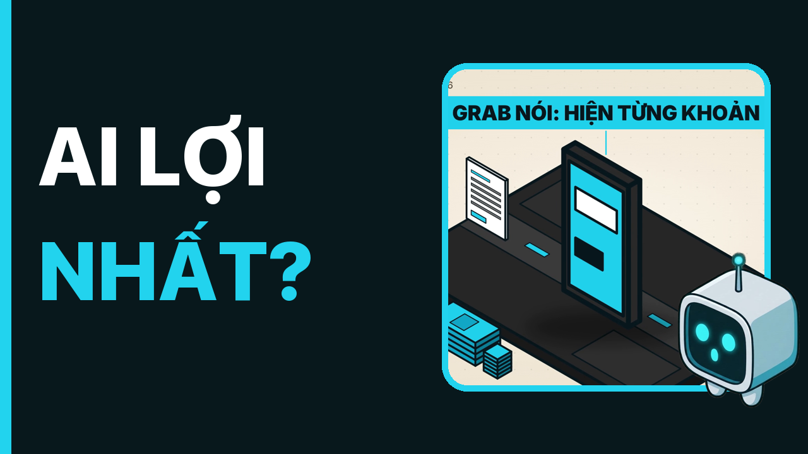
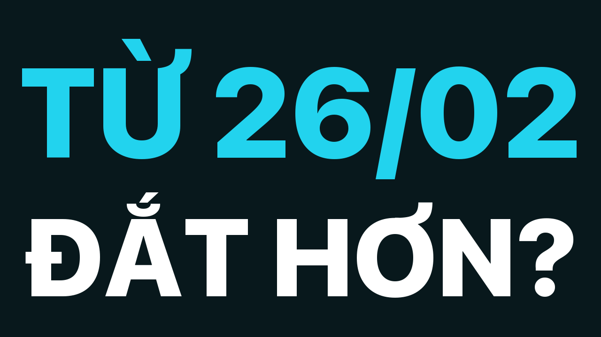

Duyệt 2 · 2026-11-11-grab-giam-phi
5 cảnh báo
- Nguồn [#m9] là số sơ bộ (Bồi hoàn dự kiến khoảng 3,9 tỷ đồng, từ 5/11/2026): video phải nói rõ 'sơ bộ'
- Cảnh báo: 14 hiệu ứng âm thanh/phút, chuẩn ≥ 15
- Cảnh báo: độ khô: 2 phông khác nhau, cần ≥ 5
- Cảnh báo: độ khô: 3 beat có tiêu chí giám khảo dưới 3
- Cảnh báo: độ khô: điểm giám khảo trung bình 3.0 < 4.0
Video
Tiêu đề + thumbnail
Phương án 1
Grab giảm phí gần 3.000 tỷ: tiền về túi ai?
Phương án 2

Grab hạ trần phí 32%: tài xế và khách được gì?
Phương án 3

Phí nền tảng Grab đổi sang 7%: lợi hay thiệt?
Shorts
Mô tả
Ngày 10/11/2026, Grab hạ phí nền tảng cho cuốc ngắn và nói sẽ chi gần 3.000 tỷ đồng sau khi Ủy ban Cạnh tranh Quốc gia vào cuộc. Video đọc thẳng văn bản của Bộ Công Thương và trang thông báo của Grab: gói tiền gồm những gì, phần giảm phí thật sự là bao nhiêu, mỗi cuốc xe đổi thế nào, và từ 26/02/2027 phí chuyển sang mức 7%. ⏱ Mốc chương 00:00 Hai nghìn đồng và ba nghìn tỷ 00:28 Vì sao Grab giảm phí lúc này? 02:10 Gần ba nghìn tỷ gồm những gì? 04:12 Mỗi cuốc xe đổi thế nào? 06:15 Hai việc cần ngóng 07:26 Tiền về túi ai? 📌 Cần biết - Con số gần 3.000 tỷ đồng là kế hoạch chi dự kiến của Grab theo văn bản của Ủy ban, không phải số tiền đã chi. - Phần chừng 227 tỷ đồng cho giảm phí là số kênh tự tính (tổng trừ các phần khác), văn bản không tách riêng. - Kết quả xác minh của Ủy ban mới ở mức sơ bộ. Số bồi hoàn gần 3,9 tỷ đồng là số dự kiến. - Các ví dụ cuốc xe (100.000 đồng, 15.000 đồng, 60.000 đồng, 200.000 đồng) là phép tính minh họa của kênh, không phải số liệu trung bình. - Chuyến GrabCar 37.000 đồng là một chuyến do một tài xế đăng, không đại diện cho mọi chuyến. 📎 Nguồn (truy cập 10/11/2026) - Bộ Công Thương: https://moit.gov.vn/tin-tuc/thong-tin-ve-ket-qua-xac-minh-so-bo-cua-uy-ban-canh-tranh-quoc-gia-doi-voi-chinh-sach-gia-phi-cua-grab.html - Grab Việt Nam: https://www.grab.com/vn/blog/grab-cap-nhat-ve-phi-nen-tang/ - Tuổi Trẻ: https://tuoitre.vn/tai-xe-grab-keu-goi-tat-app-2-ngay-chay-cuoc-xe-185km-chi-nhan-duoc-46900-dong-10026090917312805.htm - Báo Công Thương: https://congthuong.vn/ra-soat-phi-grab-gan-3-000-ty-dong-huong-toi-nguoi-tieu-dung-tai-xe-480122.html - Grab Holdings · báo cáo quý III/2026 (SEC): https://www.sec.gov/Archives/edgar/data/0001855612/000185561226000148/a2026q3-earningspressrelea.htm - Vietcombank: https://www.vietcombank.com.vn/vi-VN/KHCN/Cong-cu-Tien-ich/Ty-gia - Các phép tính minh họa do kênh tự tính từ số liệu trên. 🖼 Ghi công ảnh - Ảnh: Tuổi Trẻ - Ảnh: Báo Công Thương
Tags
Grab, Grab giảm phí, phí nền tảng Grab, Ủy ban Cạnh tranh Quốc gia, Bộ Công Thương, tài xế công nghệ, Grab 7%, phí Grab 2027, GrabBike, GrabCar, cước xe công nghệ, Nhịp Công Nghệ